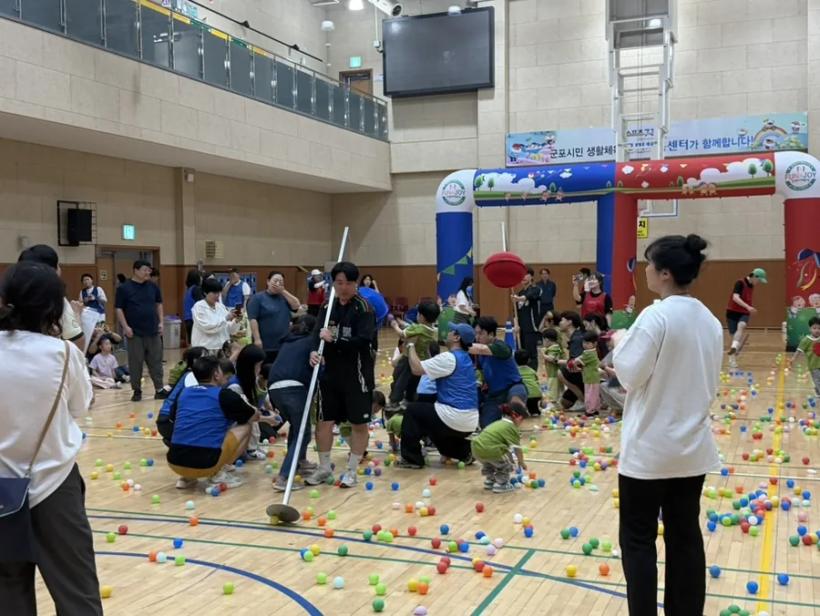
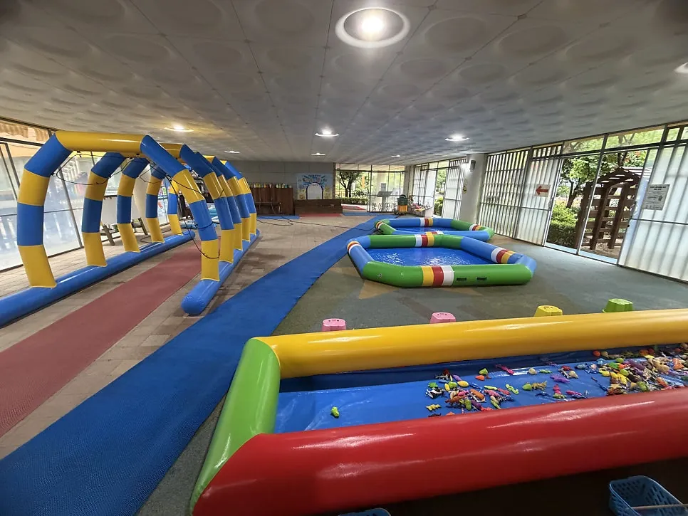
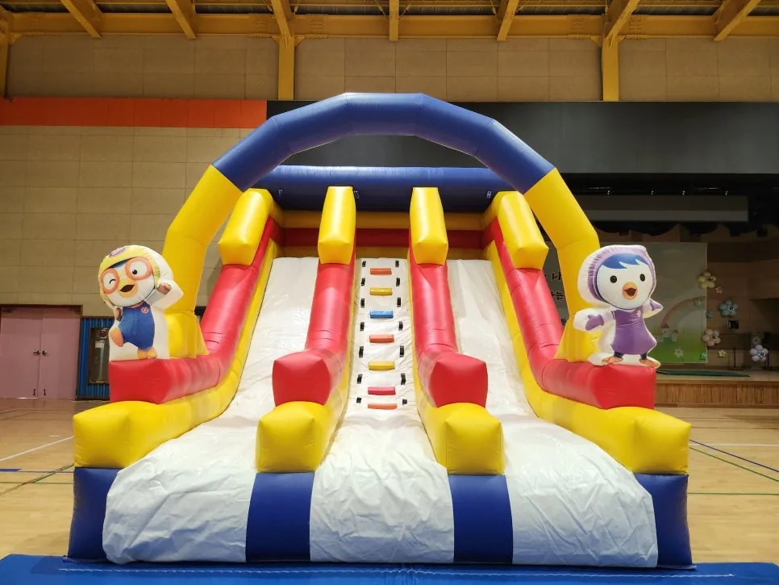
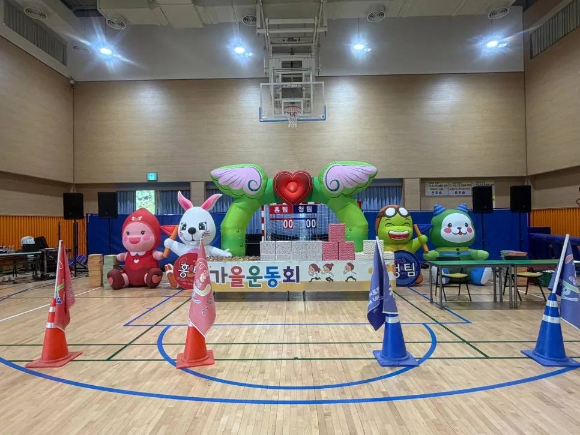
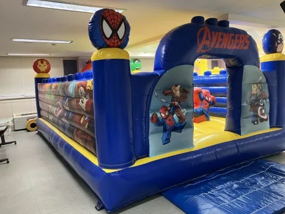
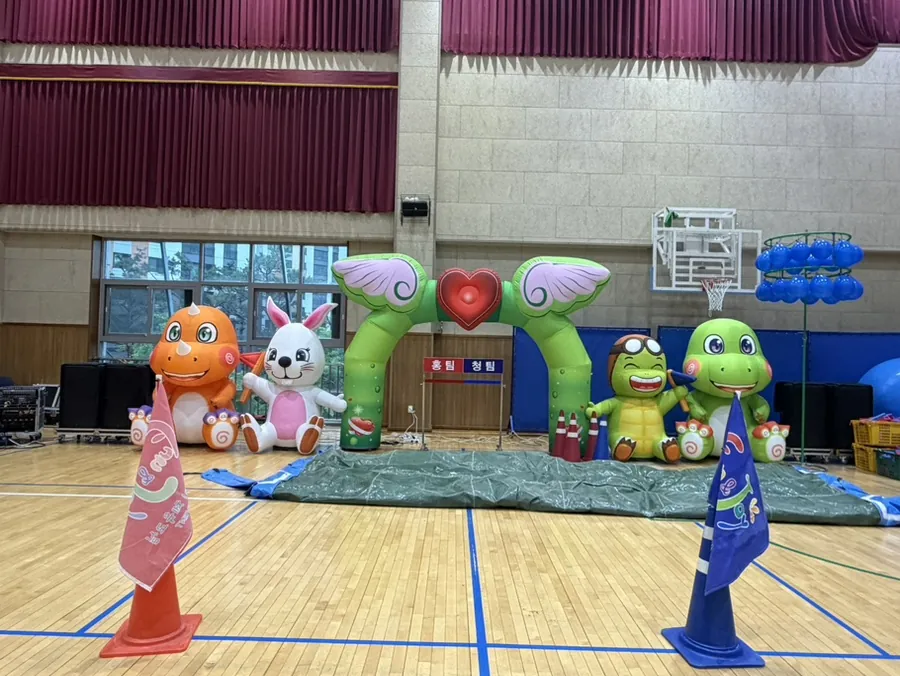
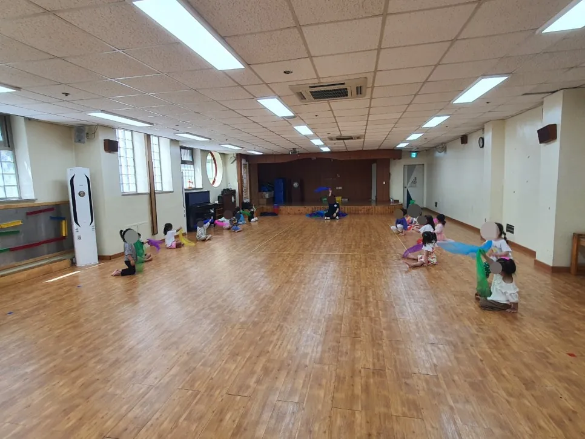
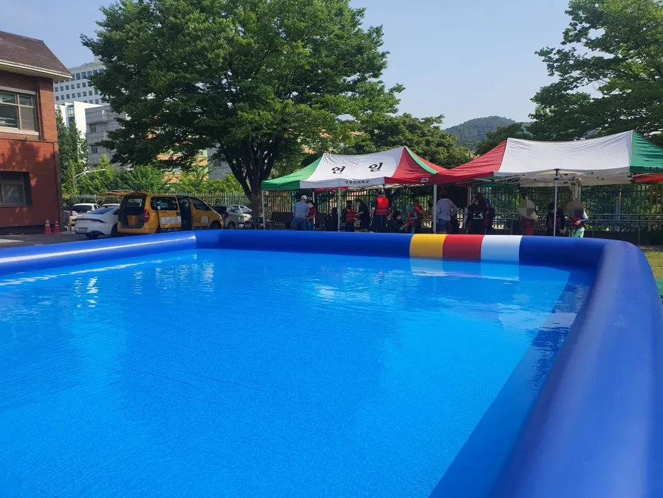
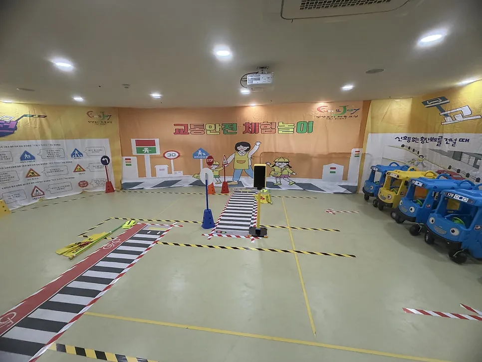

홈 › 블로그
Blog · Event Guide
행사 준비 블로그
운동회, 에어바운스, 물놀이, 체험놀이, 발표회를 맡은 원장님 · 선생님 · 담당자가 먼저 확인할 것들을 현장 기준으로 정리합니다.

군포 · 2026년 11월 8일
군포 어린이집 가족운동회 — 입구 아치 · 세팅 · 준비체조
군포에서 어린이집 가족운동회를 준비하는 원장님과 선생님을 위한 글입니다. 군포 어린이집 가족운동회의 입구 아치 세팅 과정, 가족사진 자리, 준비체조, 실내 진행 요령을 정리했습니다.

동탄 · 2026년 11월 8일
동탄 유치원 물놀이 행사 준비 — 수영장 · 분수터널 · 안전
동탄에서 유치원 · 어린이집 여름 물놀이 행사를 맡은 원장님과 선생님을 위한 글입니다. 동탄 유치원 물놀이 행사 준비를 수영장 크기, 분수터널, 낚시체험, 미끄럼 방지와 안전 순서로 정리했습니다.

시흥 · 2026년 11월 8일
시흥 에어바운스 안전 점검 체크리스트 — 설치 · 바람 · 운영
시흥에서 유치원 · 어린이집 에어바운스 행사를 준비하는 담당자를 위한 체크리스트입니다. 시흥 에어바운스 안전 점검을 설치 전, 운영 중, 바람 기준, 이용 규칙으로 나누어 정리했습니다.

안산 · 2026년 11월 8일
안산 유치원 가을 운동회 준비 — 실내 · 종목 · 세팅 · 안전
안산에서 유치원 · 어린이집 가을 운동회를 맡은 원장님과 선생님을 위한 글입니다. 안산 유치원 가을 운동회 준비를 장소 정하기, 종목, 입구 세팅, 준비체조, 안전 점검표로 정리했습니다.

경기 남부 공통 · 2026년 11월 8일
어린이날 행사 에어바운스 고르기 — 종류 · 키즈 라이더 · 운영
어린이날 행사를 맡은 어린이집 · 유치원 · 단체 담당자를 위한 글입니다. 어린이날 행사 에어바운스 종류, 키즈 라이더 레이스 코너, 시간 나누기와 안전 운영 순서를 정리했습니다.

경기 남부 공통 · 2026년 11월 8일
어린이집 발표회 준비 — 무대 · 음향 · 의상 · 순서표
어린이집 · 유치원 발표회를 처음 맡은 원장님과 선생님을 위한 준비 글입니다. 어린이집 발표회 준비를 순서표, 무대와 음향, 의상과 아이들 동선, 리허설 순으로 정리했습니다.

경기 남부 공통 · 2026년 11월 8일
어린이집 유아체육 수업 — 스카프 · 철봉 · 준비운동 진행
어린이집 · 유치원 유아체육 수업을 알아보는 원장님과 선생님을 위한 글입니다. 어린이집 유아체육 수업의 스카프 수업과 철봉 수업 진행 순서, 준비운동, 교구 고르기를 정리했습니다.
오산 · 2026년 11월 8일
오산 초등학교 체육대회 종목 짜기 — 협동 경기 · 입장 · 안전
오산에서 초등학교 체육대회를 준비하는 선생님을 위한 글입니다. 오산 초등학교 체육대회 종목을 학년별 난이도, 협동 경기, 입장 방식, 안전 규칙으로 나누어 정리했습니다.

인천 · 2026년 11월 8일
인천 10x10 수영장 대여 — 생존수영 수업 설치 준비 체크
인천에서 학교 · 기관 생존수영이나 여름 물놀이를 위해 큰 수영장 대여를 알아보는 담당자를 위한 글입니다. 인천 10x10 수영장 대여 전 확인할 장소, 물, 바닥, 안전, 철수 순서를 정리했습니다.

화성 · 2026년 11월 8일
화성 유치원 체험놀이 — 교통안전 · 꼬마농부 프로그램 준비
화성에서 유치원 · 어린이집 체험놀이 프로그램을 알아보는 원장님과 선생님을 위한 글입니다. 화성 유치원 체험놀이로 교통안전 체험과 꼬마농부 체험의 구성, 역할극 순서, 공간 준비를 정리했습니다.